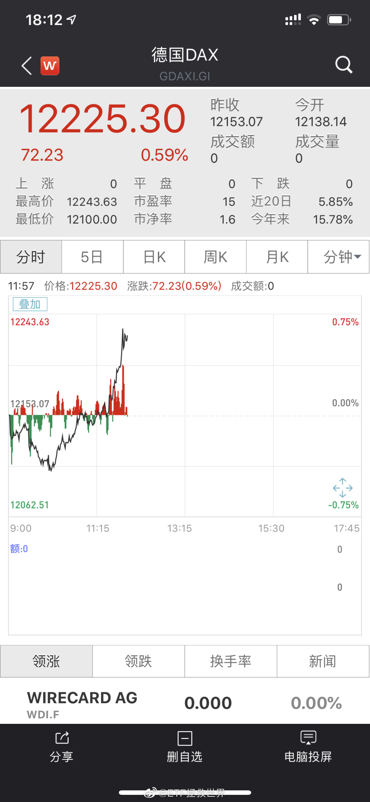

回复@1818就是我:涨了不开心，难道跌了开心吗？启动前又买了，不应该开心吗？建议你有机会就让自己多开心一点，人也会比较健康//@1818就是我:为什么每天涨这么一点就这么开心。。@ETF拯救世界:小样儿 
更要注意的是，我预计2季度，最迟3季度，500将恢复高增长。@ETF拯救世界:目前已经有一半500成分股公布年报，从四季度单季看，整体利润依然在增长。远远好于全市场，甚至好于300。1月份说500越跌越贵的人太坏了。
这也是我每次都能迅速从各种明枪暗箭又或者是喷子的吐沫中迅速走出来的原因，因为能感受到更多的爱啊……//@ETF拯救世界:回复@潮水18:所以家长才需要给孩子一个底线——无论外面的世界如何黑暗，家里永远会让你感受到温暖。有这最后的温暖孩子就有希望。@新浪视频:【悲剧！上海17岁男孩因琐事与母争吵 跳高架桥当场死亡】4月17日晚10时左右，上海卢浦大桥发生一起跳桥事故。据调查，跳桥者为17岁在校高二男生，经120确认当场死亡。其母讲述，当她驾驶到卢浦大桥时，与儿子因在校同学矛盾发生口角，其子突然跑出车门跳下大桥，女子追逐不及，悲剧发生。#上海17岁男孩跳桥# @中宏网新闻 网页链接
回复@潮水18:所以家长才需要给孩子一个底线——无论外面的世界如何黑暗，家里永远会让你感受到温暖。有这最后的温暖孩子就有希望。@新浪视频:【悲剧！上海17岁男孩因琐事与母争吵 跳高架桥当场死亡】4月17日晚10时左右，上海卢浦大桥发生一起跳桥事故。据调查，跳桥者为17岁在校高二男生，经120确认当场死亡。其母讲述，当她驾驶到卢浦大桥时，与儿子因在校同学矛盾发生口角，其子突然跑出车门跳下大桥，女子追逐不及，悲剧发生。#上海17岁男孩跳桥# @中宏网新闻 网页链接
这位母亲把车停在路中间，跟孩子说了什么，刺激到孩子毅然跳桥，我自己脑补了一下。然后告诉自己，以后无论如何都不能对孩子说这样的话。@新浪视频:【悲剧！上海17岁男孩因琐事与母争吵 跳高架桥当场死亡】4月17日晚10时左右，上海卢浦大桥发生一起跳桥事故。据调查，跳桥者为17岁在校高二男生，经120确认当场死亡。其母讲述，当她驾驶到卢浦大桥时，与儿子因在校同学矛盾发生口角，其子突然跑出车门跳下大桥，女子追逐不及，悲剧发生。#上海17岁男孩跳桥# @中宏网新闻 网页链接